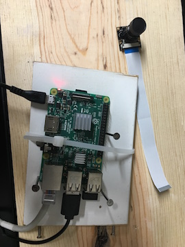

I’m a Devops Engineer currently working at Expedia. I’m a big advocate of open source technology and love Linux, Docker, Python & automation.
More recently I have become interested in Cloud in particular AWS and related technologies such as Terraform and Packer. My passion for technology does not end at work !! For example, I built a baby monitor for my son using Raspberry Pi so I could see him on our smart TV or any of our smartphones !! I don’t see myself as some that just write codes, given my ops background, instead I see myself as someone that loves to write code to automate ops work and that is not just only related to my work .... I do write programs at work and home for various projects ( using shell scripting or python etc). I also like working on Jenkins, splunk pagerduty etc tools too.
My current work is mostly around availability, latency, performance, efficiency, change management, monitoring, emergency response, and capacity planning for services/applications.
I enjoy helping others at work, or outside of my work...the below are my social sites

I don’t see myself as some that just write codes, given my ops background, instead I see myself as someone that loves to write code to automate ops work and that is not just only related to my work .... I do write programs at work and home for various projects ( using shell scripting or python etc). I also like working on Jenkins, splunk pagerduty etc tools too.